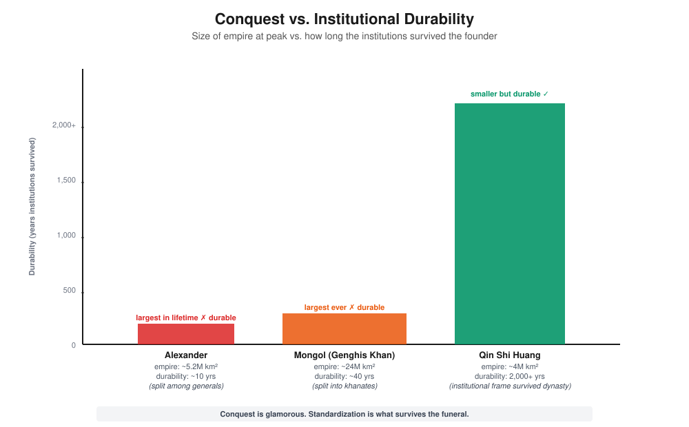
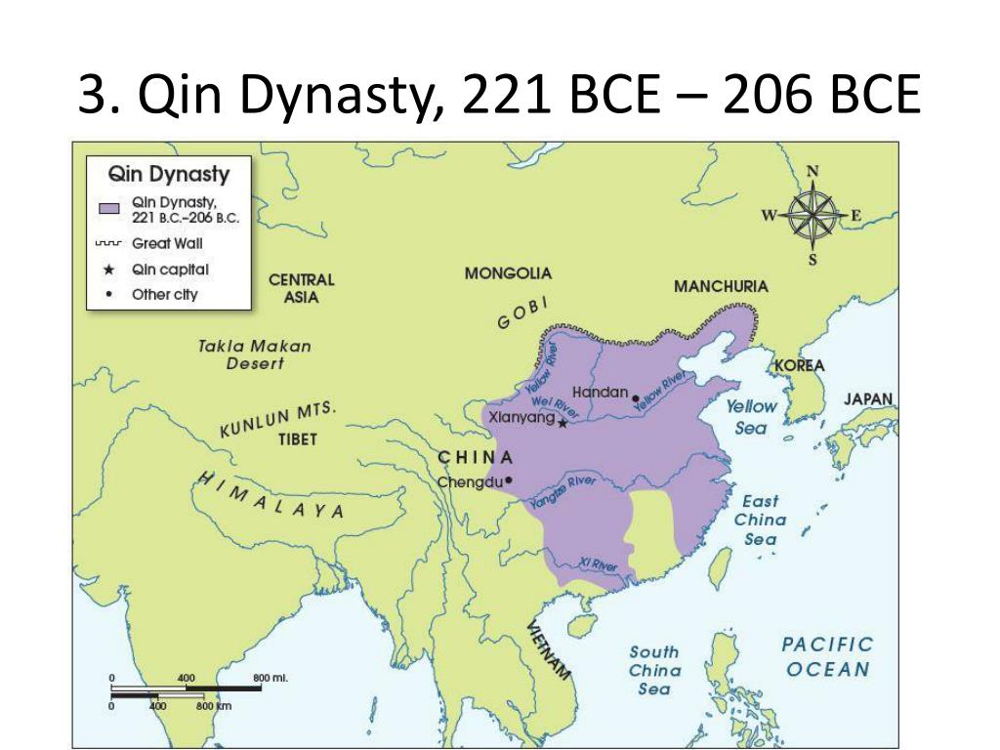
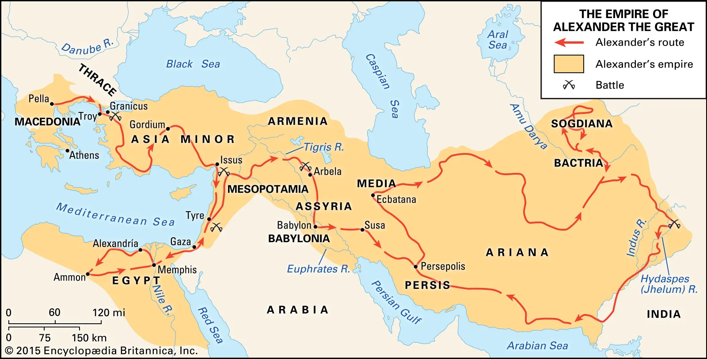
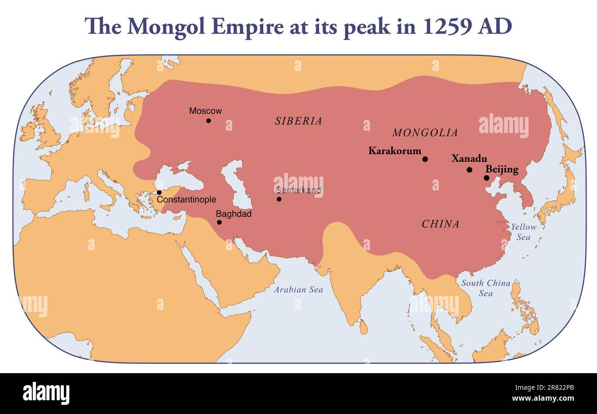
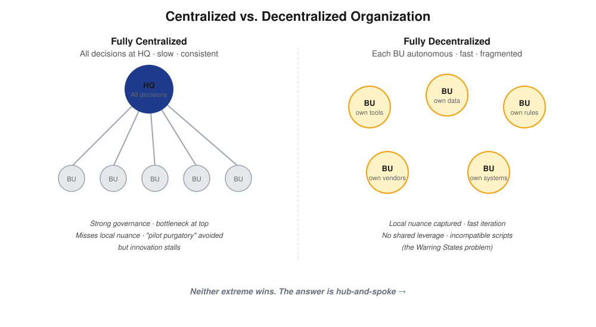

AI's Report Card Is In, Opus 4.7 Has Mixed Reviews, and What the First Emperor Can Teach You About Standardization
AI Brief, Curated
Editor's Take
Two annual reports dropped this week that I think belong in every leader's reading stack. Stanford's AI Index — AI's most comprehensive annual report card — came out on April 14, and JP Morgan Asset Management updated their AI presentation. I'll cover the Stanford findings in detail below and link the JP Morgan deck as a separate recommendation. Between the two, you get both the technology picture and the economic picture in about 90 minutes of reading.
What struck me most in the Stanford data wasn't the model benchmarks or the investment numbers. It was this: between 50% and 84% of K-12 students are now using AI for schoolwork. That number hit home personally. My son's swimming coach asked the team to use Claude when setting their new year goals this season. The result? Way more realistic, thoughtful goals than last year when they did it themselves. My son also uses Claude for help with homework. I'm 50-50 on that one. The goals exercise was genuinely good — the AI helped him think more clearly about what was achievable. But for homework, I wish he'd think more before consulting Claude. There's a difference between using AI to sharpen your thinking and using it to skip the thinking. We haven't figured out where that line is yet, and neither has anyone else.
Meanwhile, Claude Opus 4.7 shipped, a lawyer got suspended for 57 defective citations, and Nature published a study that should humble anyone claiming AI agents are about to replace scientists. It was a week for nuance — which is the most undervalued commodity in AI right now.
The most comprehensive annual assessment of AI's state dropped on April 14, and the key findings paint a picture of extraordinary capability gains alongside troubling structural gaps. Technically: Anthropic leads model rankings, trailed closely by xAI, Google, and OpenAI. SWE-bench coding performance went from 60% to near 100% in a single year. AI now meets or exceeds human baselines on PhD-level science questions and competition mathematics. Economically: US private AI investment reached $285.9B in 2025 — 23 times China's $12.4B. Organizational adoption hit 88%. Estimated US consumer surplus from GenAI tools reached $172B annually. But the structural picture is where the nuance lives. AI scholars moving to the US dropped 89% since 2017, with that decline accelerating 80% in the past year alone — a talent pipeline problem that no amount of capital can immediately fix. China has "nearly erased" America's lead in AI bot performance while leading in patents, publications, and robot deployment. And the trust gap is widening: 56% of AI experts believe AI will have a positive US impact, versus only 10% of Americans who feel more excited than concerned. Governance frameworks are falling behind capabilities at every level. Perhaps the most telling stat for anyone with children: 50–84% of K-12 students and ~90% of US university students now use AI for schoolwork. The technology has already been adopted faster than the institutions have figured out what to do about it.
Recommended reading #1: The full Stanford AI Index 2026 Report — the single best "state of the world" document on AI published each year. If you read one report this quarter, make it this one.
JP Morgan Asset Management's regularly updated AI presentation is the best single source I've found for understanding the economic and infrastructure picture behind AI. Key data points from the current edition: hyperscaler capex surpassed $400B in 2025 and is approaching $700B in 2026 — up fivefold in five years, rivaling peak capital intensity during the late-1990s telecom boom. Power is the binding constraint, with data centers triggering electricity load growth not seen since the 1950s. Liquid cooling's share of AI training servers is projected to rise from 15% in 2024 to 74% in 2026. And the adoption gap remains: nearly 90% of companies have invested in AI, but fewer than 40% report measurable gains — largely because most are applying AI to discrete tasks rather than redesigning how work gets done. Mega-cap tech trades at ~28x P/E — expensive but not extreme, as valuations have barely budged while profits soared. The presentation is updated frequently and available free.
Recommended reading #2:JP Morgan's AI presentation — the best economics-of-AI deck available. Pairs well with the Stanford Index: one covers the technology, the other covers the money.
Anthropic released Claude Opus 4.7 on April 16 — the newest flagship model, available across the API, Amazon Bedrock, Google Vertex AI, and Microsoft Foundry. The official improvements are real: stronger multi-step task performance, more reliable agentic execution, improved long-horizon reasoning, and the first Claude model with high-resolution image support (max resolution up to 2576px / 3.75MP from 1568px / 1.15MP). A new "task budgets" feature gives Claude a token-level estimate for agentic loops. Pricing holds at $5/M input, $25/M output — though a new tokenizer may use up to 35% more tokens on some content, making effective costs modestly higher. The claims on design, presentation, and visual understanding look strong. However, early user reports are less uniformly positive: multiple users and reviewers have flagged that Opus 4.7 appears to hallucinate more frequently than Opus 4.6, and some have reported that overall task performance feels like a regression in certain workflows. This is worth watching — model releases often improve on benchmarks while introducing new failure modes in production use. As with any frontier model update, the recommendation is to test against your own use cases before assuming the upgrade is strictly better.
A Nature study published this week found that human scientists significantly outperform the best AI agents on tasks requiring sustained, multi-step reasoning and deep domain expertise — exactly the kind of work that AI demos tend to make look easy. This is a useful corrective to the narrative that AI agents are on the verge of replacing knowledge workers wholesale. The gap isn't closing as fast as benchmark leaderboards suggest, because real scientific work requires the kind of contextual judgment, assumption-questioning, and cross-domain synthesis that Narayanan and Kapoor's "capability-reliability gap" predicts. The models are impressive in constrained settings. The messy, open-ended work of actual science — where the problem isn't well-defined and the answer isn't verifiable in real time — remains distinctly human territory. For now.
The Nebraska Supreme Court suspended Omaha attorney Greg Lake from practicing law after his appellate brief contained 57 defective citations out of 63 — including 20 that were pure AI hallucinations: cases that simply do not exist. US courts imposed at least $145,000 in sanctions against attorneys for AI citation errors in Q1 2026 alone. This is the reality check for anyone deploying AI in high-stakes, verifiable contexts without a human review layer. The AI is fast. The AI is confident. The AI is sometimes confidently, verifiably wrong. And in domains where accuracy has legal, fiduciary, or regulatory consequences, "mostly right" is not a standard anyone can afford. The pattern is consistent with the Nature study above: AI excels at generating plausible-sounding output; humans remain essential for verifying whether that output is actually true.
Org Design & Changes, Curated
This Week's Essay
The Counterintuitive Power of Standardization: What the First Emperor Can Teach Modern Business
This is a longer piece this week — about 2,500 words — because the argument builds in layers and it rewards reading in full. The lesson: knowing which layer to centralize and which to leave alone is one of the hardest and most consequential design decisions any leader makes. A 2,200-year-old case study illuminates it better than most business books.
A Tale of Two Verdicts
In the West, Qin Shi Huang — the First Emperor of Qin, best known to most Western readers as the emperor buried with the 8,000-strong Terracotta Army discovered near Xi'an in 1974 — is often framed as one of history's great unifiers. He ended over 500 years of civil war, conquered the rival states of Han, Zhao, Wei, Chu, Yan, and Qi, and in 221 BCE established the first unified Chinese empire. The very word China derives from Qin.
The Terracotta Army near Xi'an — over 8,000 warriors buried with the First Emperor. Discovered in 1974.
And while Alexander the Great and Genghis Khan conquered larger territories, their empires fragmented almost the moment they died — Alexander's was divided among his generals within a decade, and the Mongol Empire began splintering into rival khanates after Genghis Khan's death. Qin's framework, by contrast, endured. The administrative structure he built "served as a model for government in China to the present day," and historians credit the Qin "as the originators of the Chinese imperial system that would endure in some form until the Xinhai Revolution in 1911." That's more than 2,000 years of institutional continuity from a dynasty that itself lasted only fifteen.

Alexander and Genghis Khan conquered far larger territories. Neither empire's institutions survived the founder's funeral. Qin's did — for over 2,000 years.
The other verdict is far less flattering. In this version, Qin Shi Huang is a tyrant who buried scholars alive, burned the books of the Hundred Schools of Thought, and worked hundreds of thousands of peasants to death building the Great Wall and his own tomb.
But here's the interesting twist — and it matters for anyone thinking about leadership. History, as the saying goes, is written by the victors. The tyrant portrait comes almost entirely from one source: Sima Qian's Records of the Grand Historian, written under the Han dynasty — the very dynasty that overthrew Qin and needed to justify its own rule. Modern historians now openly doubt the story. Sima Qian "had every reason to denigrate the earlier emperor to flatter his own." The 2015 discovery of 200,000 Qin bamboo slips in Hubei has further complicated the received picture, revealing a bureaucracy with fines for minor late arrivals (not death penalties), waived punishments for weather delays, and paid wages — even for convict laborers on the Great Wall.
History, in other words, is sometimes a mask decorated by whoever inherits the throne.
The Chaos Before the Standard
To appreciate what Qin Shi Huang actually did, picture what he inherited. Seven warring states, each with its own written script, its own currency, its own weights and measures, even its own cart-axle widths. Roads were rutted tracks where a cart from one kingdom couldn't fit the grooves left by carts from another. A merchant crossing three states needed to relearn the weight system three times. A scholar's book might be unreadable 200 miles from where it was written.

The Qin Dynasty, 221–206 BCE — the first unified Chinese empire, forged from seven warring states.The word "Horse" written in seven different scripts from the seven warring states — the same noun, unreadable 200 miles away.Knife-money, spade-money, and regional coins from the warring states — a merchant crossing three states needed to exchange currency three times.
This wasn't a minor inconvenience. It was a structural drag on everything — trade, taxation, troop movement, even basic communication.
Unify Everything. Unify It Now.
Qin Shi Huang and his chancellor Li Si did not wait. Each time a state fell, they moved immediately to dissolve its differences.
They standardized the written script, consolidating regional variants into small seal script so that parts of the empire that didn't speak the same language could still communicate in writing. They standardized currency, replacing knife-money, spade-money, and regional coins with a single round bronze coin. They standardized weights and measures, casting bronze and iron reference models stamped with an imperial edict and distributing them across the provinces. They standardized cart axles, so that a wagon from Xianyang could roll cleanly into a rut left by a wagon from the old territory of Qi. They standardized law, replacing regional customs with a uniform legal code. And they replaced the whole feudal system with 36 centrally administered commanderies run by appointed officials, not hereditary nobles.
Here is the part that deserves real attention: this was against common sense at the time. The default assumption of Chinese statecraft had been the Zhou fengjian system — kings distributed territory to relatives and loyal nobles to maintain harmony across distances that seemed too vast to govern directly. Li Si pushed back. His response cut to the bone: the Zhou kings had distributed land to their sons and brothers in the name of harmony, but within a few generations those very relatives were waging war against one another. Weren't the warring states themselves, he argued, ultimately descended from the same Zhou ancestors? Giving territory away was not the path to peace — it was the seed of the next civil war.
Qin Shi Huang sided with Li Si. He abolished hereditary fiefdoms entirely and imposed the commandery-county system on the whole empire. Against what everyone "knew" about governance, he bet on centralization.
The Cost of Getting It Right
This was brutally hard work. According to traditional accounts, Qin Shi Huang personally reviewed 120 jin — roughly 60 kilograms, or about 130 pounds — of bamboo-strip documents every single day. He worked like a man who knew that the moment he let up, the old fractures would reopen. And in fact, that's exactly what happened. His dynasty collapsed within four years of his death in 210 BCE, partly because the machinery of centralization had been held together by his personal will.
Qin bamboo slips — the kind of documents the First Emperor reviewed 130 pounds of every single day. 200,000 slips discovered in Hubei in 2015. Source: Xinhua.
But here is the astonishing thing: the machinery itself didn't fail. The Han dynasty that overthrew the Qin did not return to the old fengjian patchwork. They "largely continued the military and administrative practices instituted by the Qin," kept the script, kept the coinage system, kept the commanderies, kept the standardized weights. Every subsequent dynasty — Tang, Song, Ming, Qing — built on the Qin frame. The political structure survived 2,000 years of dynastic turnover.

Alexander the Great conquered from Greece to India. His empire fragmented among his generals within a decade of his death.

The Mongol Empire at its greatest extent, 1259 AD — the largest contiguous land empire in history. It began splintering into rival khanates after Genghis Khan's death.
Contrast that with Alexander and Genghis Khan. Both conquered more territory in a single lifetime than Qin Shi Huang ever did. Neither left behind an institutional frame that could survive their own funeral. Conquest without standardization is just a large tent in a windstorm.
The Business Lesson (and the Careful Qualifier)
Now transpose this to a company — especially one built through acquisition, or a global firm with a hundred business units that each grew up with their own ERP system, their own procurement contracts, their own HR policies, their own data warehouses, their own way of closing the books. Everyone has a reason their way is better. No one wants to change. Every standardization project hits ferocious resistance.
And the person leading it looks, in the short term, exactly like Qin Shi Huang did to his critics — disruptive, overreaching, insensitive to local culture.
But done well, the payoff compounds the same way. A common back end — shared platforms, shared financial systems, shared data, shared brand standards, shared culture — unlocks economies of scale no collection of independent fiefdoms can match. It makes talent portable across the organization. It makes capital allocation legible. It makes the next acquisition easier to integrate. It outlasts the CEO who built it.
This is not an argument to centralize everything. Qin Shi Huang standardized the script and the cart axle. He did not tell the people of the old state of Chu what to cook for dinner. The art is knowing which layer to unify and which layer to leave alone — and the same discipline applies to a company.

The two extremes: top-down control that bottlenecks innovation, vs. total autonomy that fragments into incompatible systems — the Warring States problem in modern form.
Two dimensions matter: size and function.
Size first. When Henry Singleton ran Teledyne with "extreme decentralization," he was running a 40,000-person company, and most of its business units were still sizable — thousands of employees each, with real scale of their own. That context matters. Decentralization works because each unit is large enough to absorb its own overhead, attract real talent, and operate as a genuine business. A 1,000-person company chopping itself into ten 100-person fiefdoms usually doesn't get nimbleness — it gets ten undersized teams, none with enough leverage to compete. Below a certain size, further decentralization is just fragmentation. The Qin parallel is exact — seven small kingdoms, each with its own script and currency, were not seven nimble competitors. They were seven underpowered duplications of the same overhead.
William Thorndike's The Outsiders — the book Warren Buffett placed at the top of his recommended reading list.
Function second. Different functions want to live in different places on the spectrum. Back-office functions — IT, finance systems, HR platforms, procurement, legal, data infrastructure — generally belong centralized. They are where economies of scale are most real, where inconsistency creates pure drag, and where the customer never sees the seam. Client-facing functions are the opposite. Sales, customer service, and in some businesses innovation itself (3M is the classic case, with R&D pushed deep into operating divisions close to customer problems) need to be decentralized and empowered, because customer needs genuinely vary — by geography, by age group, by local competitive dynamics — and a head-office pattern imposed from a thousand miles away will miss what a local team sees every day.
This framework is what William Thorndike's The Outsiders — the book Warren Buffett placed at the top of his recommended reading list in his 2012 Berkshire Hathaway shareholder letter — captures in its central lesson. Thorndike profiles eight CEOs whose companies dramatically outperformed the S&P 500 over their tenures: Henry Singleton at Teledyne, Tom Murphy at Capital Cities, John Malone at TCI, Katharine Graham at The Washington Post, Bill Anders at General Dynamics, Bill Stiritz at Ralston Purina, Dick Smith at General Cinema, and Warren Buffett himself. The pattern is remarkably consistent: decentralize operations, centralize capital allocation. Capital Cities put it plainly inside every annual report: "Decentralization is the cornerstone of our philosophy." But Tom Murphy and Dan Burke held the lever that mattered — every major capital decision, every acquisition, every buyback — at the top. Singleton ran Teledyne with fewer than 50 people at headquarters, but he personally directed the capital allocation that let the company repurchase over 90% of its own shares when it was undervalued.
The practical translation is straightforward. Centralize the infrastructure — platforms, capital allocation, brand, culture, core data, back-office systems — where scale, consistency, and common language genuinely compound. Decentralize the work where responsiveness, local knowledge, and ownership genuinely compound. The merit of centralization is that it builds a foundation that outlasts any individual leader; the merit of decentralization is that it keeps the organization close to the ground where real customers and real markets live. Neither is universally right. But most companies err heavily on one side: they over-decentralize the back end (letting every acquired unit keep its own ERP, its own HR system, its own data taxonomy) and over-centralize the front end (dictating customer scripts from headquarters). The Outsiders got the directionality right, and compounded the difference for decades.
The Uncomfortable Truth About Lasting Impact
None of this is easy. Qin Shi Huang pushed his reforms so hard, and worked himself so hard, that the system outran its human sustainability — which is a real warning, not a small one. The modern business equivalent is a transformation leader who burns out the organization and themselves pushing integrations that lose the local knowledge that made the acquired companies valuable in the first place.
But the deeper truth holds. Go against the grain of what everyone around you believes is possible. Absorb the short-term pain of resistance. Build the common foundation that no one else is willing to build. And two decades later, when your competitors are still translating between their own internal dialects, you'll be operating on rails that let you move at a speed they can't match.
Alexander and Genghis Khan were conquerors. Qin Shi Huang was a builder. Only one of those three left something that lasted 2,000 years — and he did it by doing the unglamorous, resisted, back-breaking work of making a hundred different things into one.
For leaders this week: Map the back end of your organization. How many systems, processes, or standards exist in duplicate because no one has done the politically difficult work of unifying them? That's your cart-axle problem. Now ask: which customer-facing decisions are being made at headquarters that should be made closer to the ground? That's your Chu-dinner problem. Getting the split right — centralizing infrastructure, decentralizing execution — is the design decision that compounds longest.
Sources: Sima Qian, Records of the Grand Historian (Shiji) | Smithsonian National Museum of Asian Art, "Qin dynasty (221–206 BCE)" | Yunmeng/Hubei Qin bamboo slips (2015) | William Thorndike, The Outsiders (Harvard Business Review Press, 2012) | Warren Buffett, Berkshire Hathaway 2012 Annual Shareholder Letter | McKinsey, "To centralize or not to centralize: generative AI in banking" (June 2024) | BCG AI Radar 2025 & 2026 | AWS Enterprise Strategy, "Centralizing or Decentralizing Generative AI? The Answer: Both" (September 2024)